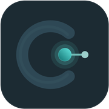

DOI または PMID を入力すると、その論文の「引用文献（過去）」と「被引用文献（未来）」が地図になります。
・引用文献（過去）：その論文が引用している論文
・被引用文献（未来）：その論文を引用している論文
・矢印の先＝引用された論文／ノードの大きさ＝被引用数
初めての方は右上の「使い方」をご覧ください。準備は無料のAPIキー登録だけ（約5分）です。

Citrail 引用を辿るDOI または PMID を入力すると、その論文の「引用文献（過去）」と「被引用文献（未来）」が地図になります。
・引用文献（過去）：その論文が引用している論文
・被引用文献（未来）：その論文を引用している論文
・矢印の先＝引用された論文／ノードの大きさ＝被引用数
初めての方は右上の「使い方」をご覧ください。準備は無料のAPIキー登録だけ（約5分）です。
このアプリは、論文の引用データを OpenAlex（オープンアレックス）という 世界最大級の無料学術データベースから取得しています。 OpenAlexを利用するには「APIキー」が必要です。
APIキーとは、図書館の利用者カードのようなものです。 「誰が利用しているか」をデータベース側が確認するための、あなた専用の合言葉（長い英数字の文字列）で、 取得は無料・クレジットカード登録も不要です。
これで準備完了です。キーはあなたのブラウザの中にだけ保存され、 OpenAlex以外に送信されることはありません。 無料の利用枠は毎日リセットされ、個人で使う分には上限に達することはまずありません。
「APIキーが設定されていないか、無効です」と表示されたら、 もう一度OpenAlexの「Copy」を押してから、貼り付け直してください。 キーは画面に出ないので、コピーがうまくいったか不安なときは、 いったんメモ帳などに貼って長い英数字が入っているか確認すると確実です。 別のパソコンやブラウザで使うときは、そのブラウザでもう一度登録が必要です。
読みたい論文の DOI または PMID を入力欄に貼り付けて 「ネットワークを作成」を押します。PubMedのページのURLをそのまま貼っても構いません。
中央の赤いノードが、いま読み込んだ起点論文です。 左側＝引用文献（起点論文が引用している過去の論文）、 右側＝被引用文献（起点論文を引用している後の論文）で、横方向は出版年順に並びます。 矢印の先が「引用された側」、ノードの大きさは被引用数、 形は研究の種類（◆RCT／⬡メタ解析・SR／▢レビュー／△観察研究／★ガイドライン／▷症例報告／◯その他）を表します。 左下の凡例でいつでも確認できます。
ノードを選択すると、詳細（タイトル・著者・被引用数など）が表示されます。 「PubMedを開く」で原著の抄録へ、☆マークでお気に入りに登録できます。
同じ年に論文が多い場合、目立つ論文以外は「ほか○件」という点線の枠にまとまっています。 タップするとその年の論文がすべて表示されます。
「上位リスト」を押すと、被引用数などの基準でトップ10が一覧表示され、タップでその論文へジャンプします。
図はドラッグで移動、ホイールやピンチで拡大縮小できます。 配置が崩れたら「表示を整える」で元に戻ります。
気になる論文の詳細パネルで「引用文献を展開」を押すと、その論文の引用文献が地図に追加されます。 これを繰り返すと、研究領域の源流まで系譜を遡れます。追加の前には件数の確認画面が出ます。
論文の詳細パネルの「エコーロケーション」を押すと、その論文の「引用の引用」（2階層先）を、 条件で絞って一気に表示できます。コウモリやイルカが反響で遠くを捉えるように、 エビデンスのつながりをざっくり俯瞰するための機能です。たどる方向（過去→過去＝根拠の源流、 未来→未来＝その後の発展、など4通りから1つ）、研究タイプ、被引用数の下限を選んで実行します。 2階層先で見つかった論文は外周のリング付きで表示され、直接の引用と区別できます。 網羅的な検索ではなく、重要かもしれない論文の“あたり”をつけるための機能です。
「上位リスト」の基準を「ハブ性（接続数）の多い順」に切り替えると、 表示中の多くの論文から共通して引用されている“結び目”の論文がわかります。 その領域の必読文献を探すときに有効です。
色分け（引用方向・出版年代・重要度）とその区切り値、引用／被引用の絞り込み、表示件数、 同じ年のまとめ方、ノードの大きさの差を変更できます。 表示件数を変えると、ネットワークは自動的に作り直されます。
ツールバーの「リンクをコピー」は、いまの表示設定ごと再現できるURLを作ります（抄読会での共有に）。 詳細パネルの「この論文を起点にしたリンクをコピー」は、その論文を起点にした初期状態のURLです。 「PNG保存」では、タイトルと年表付きの図版を画像として保存でき、スライドにそのまま貼れます。
この地図はOpenAlexに登録された引用関係のみを表示しており、 実際の論文の参考文献リストと件数が一致しないことがあります（登録件数は画面に表示されます）。 特に、参考文献が0件と表示される論文でも、その論文に参考文献が無いわけではなく、 出版社が引用データを公開していないことが原因の場合が多くあります。これは論文の質とは関係しません。 また、ガイドラインのように引用文献が非常に多い論文（数百件規模）は、表示件数の上限を超える部分が 表示されないため、引用の全体像を網羅的に把握する用途には向きません。Citrailは1本の論文の系譜を たどる探索ツールであり、網羅的な引用一覧ツールではない点にご留意ください。 また「重要度」は被引用数などによる探索上の目安であり、研究の質を保証するものではありません。 重要な判断には必ず原著をご確認ください。
1. openalex.org で無料アカウントを作成
2. openalex.org/settings/api の「Copy」ボタンでキーをコピー
（キーの文字列は画面に表示されません。詳しくは「使い方」を参照）
3. 下の欄に貼り付けて保存
キーはこのブラウザ内にのみ保存され、OpenAlex以外へは送信されません。
無料枠は毎日リセットされ、個人での利用には十分な量があります。
選んだ論文の「引用の引用」（2階層先）を、条件で絞って一気に表示します。
ざっくりとしたエビデンスのつながりの把握が目的です。